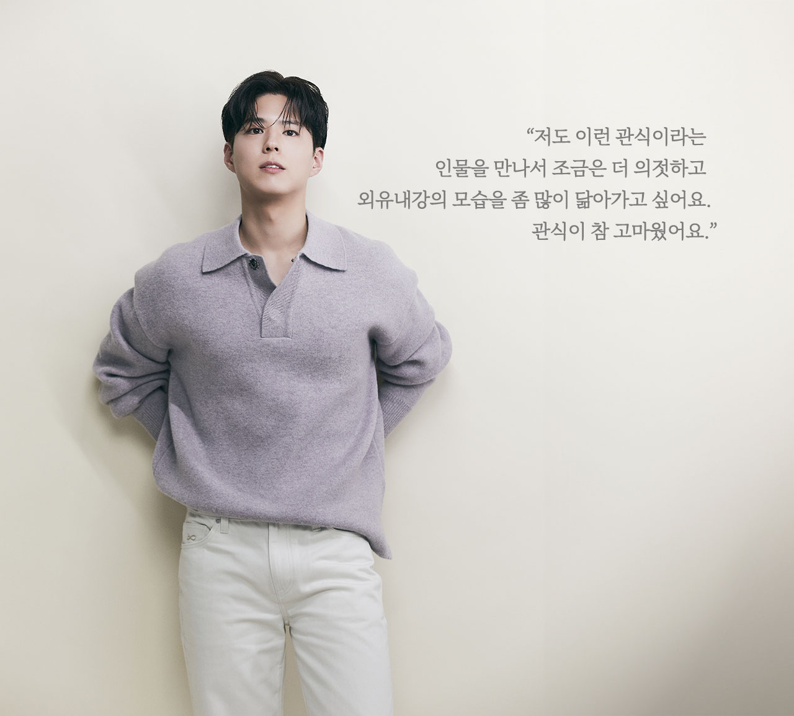

글. 이미영(조이뉴스24)
사진제공.넷플릭스,
더블랙레이블
“저는 제가 착하다고 생각하지 않아요. 욕심도 있고, 하고 싶은 것도
많은 사람이거든요.”
박보검은 ‘착하다’는 말에 손사래를 쳤다. 그는 연예계 대표 ‘긍정
아이콘’이자 맑고 밝은 에너지의 소유자로 유명하다. ‘긍정적이어야만
한다’는 강박관념이나 억지 노력은 없다. 곁을 지켜본 사람이라면 행동
하나하나, 눈빛에 ‘진심’이 있다는 것쯤은 쉬이 안다. 역시나 인터뷰를
위해 만난 이들을 살뜰히 챙기고, 모든 질문에 정성껏 답을 한다.
박보검은 “<폭싹 속았수다>에서 사망신고서를 쓸 때 글씨를 꾹꾹
눌러 쓰던 장면에서 그 달라진 글씨체 하나에도 마음이 아팠다”라는 말에
“그 부분까지 알아봐 줘서 고맙다”라고 답하며 환하게 웃었다. 매 순간
사소한 말 하나도 놓치지 않고 감사하다 인사를 건네는 배우다. 인터뷰
내용도 ‘감사함’으로 가득 찼다. 작품에 대한 불만을 쏟거나 투정하지
않고, 좋았고 행복했고 기뻤던 감정을 전달했다. ‘긍정의 힘’이 얼마나
중요하고 대단한지, 일상에서 행동으로 보여주는 박보검이다.
<폭싹 속았수다>는 제주에서 태어난 ‘요망진 반항아’ 애순(아이유
분)과 ‘팔불출 무쇠’ 관식(박보검 분)의 모험 가득한 일생을 사계절로
풀어낸 넷플릭스 시리즈로, 상반기 최고 히트작이다.
박보검은 어린 시절부터 오매불망 애순만을 바라보며 살아가는 양관식 역을
맡아 이 시대 최고의 순정남이라는 평가를 얻었다. 그는 사랑하는 사람을
향해 직구를 던지는 ‘사랑 농사꾼’에서 아내와 자식들을 현실의 수렁에서
건져내려 고군분투하는 가장이 된 관식의 성장을 섬세하게 연기했다.
“하루 벌어 먹고 사는 우리들의 일생에 관한 작품이에요. ‘산 사람은
살아야지, 살면 살아진다’는 마음으로 대사를 하려 노력했는데 많은 분들이
공감해주셔서 너무 감사해요.”
관식은 사랑하는 여자 애순(아이유)이를 만나기 위해 배에서 뛰어내려
바다를 건너고, 밥 먹던 자리에서 반 바퀴를 돌아 애순과 딸 금명의 밥에
콩을 놓아준다. “관식은 착한 배우여야 했다”는 김원석 감독의 선택처럼,
박보검이 아닌 관식은 상상이 되지 않는다.
“제가 대본 읽었을 때도 멋있다고 생각했는데 연기할 때도 멋진 순간이
많았어요. 바다에 뛰어드는 장면에서도 ‘이런 사람이 있을까? 멋지다’
생각했는데, 바다에서 수영하는 저를 돌아봤을 때 ‘진짜 멋지구나,
사랑하는 마음, 누군가를 위하는 마음이 정말 큰 인물’이라고 느꼈어요.
저는 어딘가에 이런 인물들도 살아가고 있을 거로 생각해요. 모두가
관식처럼 본인의 사람을 챙기고 아끼고 사랑하는 마음을 다 가지고 있지만,
그 모습이 잘 드러나지 않았을 뿐이라고 생각해요.”
한 여자만 바라보며 살아가는 관식의 삶이 박보검을 만나 반짝반짝 빛이
났다. “이런 남자가 어딨어?”라는 말이 절로 나올 정도로 유니콘 같은
남자지만, 어쩐지 관식과 박보검이 겹쳐진다. 박보검은 “관식을 연기하면서
닮고 싶다는 생각을 했다”고 고백했다.
“저도 그러한 사람이 되고 싶어요. 내 사람을 잘 챙기지만, 그렇다고
누군가를 무시하는 인물이 아니잖아요. 이미 존중이 다 바탕이 되어 있는
사람이에요. 사람을 대할 때도 본인의 가치관이 뚜렷해요. 저도 이런
관식이라는 인물을 만나서 조금은 더 의젓하고 외유내강의 모습을 좀 많이
닮아가고 싶어요. 관식이 참 고마웠어요.”

<폭싹 속았수다>에서 관식이 밥 먹을 때 반 바퀴 돌아앉는 ‘반 바퀴
혁명’에 대해 반응이 뜨거웠다. 그 시절 당연했던 관습과 통념을 깨고,
자신의 소신을 행동에 옮기는 건 쉬운 일이 아니다.
“말이 아닌 행동으로 본인의 생각과 의지를 표현하는 방식이에요. 어떻게
보면 굉장히 용감하고 대단해요. 그런 결단을 하는 것이 나이는 어리지만
속은 단단한 인물이라는 것을 연기하면서 느꼈어요.”
박보검도 ‘반 바퀴 혁명’ 같은 행동을 한 적이 있을까.
“혁명이라는 단어는 저에게 거창하지만, 생각의 바퀴가 전환된 건 군대를
다녀온 이후라고 말하고 싶어요. 작품을 보는 눈이나 표현하고자 하는
캐릭터의 모습이나 앞으로 나아가고 싶은 방향성이 예전보다 과감해지기도
하고 도전하고 싶은 마음이 커졌어요. 쉬지 않고 일하고 싶다는 마음이
드는 반 바퀴 생각이에요.”
박보검의 밝은 이미지는 여전하지만, 내면은 더 성숙해지고 단단해졌다.
군대가 삶에 큰 영향을 끼쳤다. 연예계 일을 하며 바쁘게 달려온 그는
“군대에서 마음을 많이 충전하는 시간을 가졌다”고 했다.
“저 자신의 시선을 많이 바꾸게 됐어요. 그 전엔 모든 것들을 다 챙기고
아우르려는 마음이 컸다면 지금은 저부터 신경쓰려는 마음이 크죠. 제가
먼저 건강하고 저부터 잘 지켜야 다른 사람을 더 잘 지킬 수 있다고
생각해요. 군대에서 후임을 많이 챙겼는데 ‘난 누가 챙겨주지’ 하는 생각이
들더라고요. 마음의 주머니가 커진 거 같아요.”
‘긍정’에 대한 소신도 더 뚜렷해졌다. ‘무조건 행복해져야 한다’는 압박이
아닌, 나와 주변이 행복하기 위한 마음이 밑바탕이 됐다.
“좋은 에너지, 긍정적이고 밝은 기운을 전달해 주는 사람과 같이 일하면
힘을 받잖아요. 내가 같이 하고 싶은 사람이 결국 내가 되고 싶은 사람인
거예요. 그 마음을 계속 변치 않으려고 생각하면서 일을 하게 되는 것
같아요. 물론 부정적인 이야기도 귀담아 들을 줄 알아야 한다고, 그래야
저도 성장한다고 믿어요. 그래도 중심이 흔들리지는 않는 것 같아요.”
박보검은 지난 2011년 영화 <블라인드>로 데뷔해 2015년 tvN
<응답하라 1988>과 2016년 KBS2 <구르미 그린 달빛>으로
신드롬급 인기를 얻었다. 군대를 다녀온 뒤 <폭싹 속았수다>를
연달아 선보이며 인생작과 인생캐를 경신했다. 푸릇한 전성기를 다시금
맞이한 박보검은 지금 어떤 계절을 지내고 있을까.
“초봄을 지나는 것 같아요. <폭싹 속았수다>와 함께 예쁘게 꽃피울
때가 아닌가 싶네요. 박보검 인생에서 봄이란 챕터에 또 하나의 씨앗을
심은 작품이기도 하고요. <굿보이>로 또 한 번의 봄이 만개할 수
있지 않을까 기대해봅니다.”
신작 JTBC <굿보이>는 특채로 경찰이 된 메달리스트들이 메달 대신
경찰 신분증을 목에 걸고 비양심과 반칙이 판치는 세상에 맞서 싸우는 코믹
액션 청춘 수사극이다. 박보검은 복싱 국가대표 출신 경찰 동주를
연기한다.
“사실 아직까지는 고생했다고 말하기는 이르지만, 최근 촬영을 마친
<굿보이> 동주에게, 그리고 저 자신에게도 말해주고 싶어요. ‘폭싹
속았수다’(매우 수고하셨습니다).”